rnaseq_from_star.RmdIn this vignette, we demonstrate how to use the bbcRNA package to run an RNA-seq analysis starting from gene read count files produced by the STAR aligner.
if (!requireNamespace("devtools", quietly = TRUE)) install.packages("devtools") if (!requireNamespace("bbcRNA", quietly = TRUE)) devtools::install_github("vari-bbc/bbcRNA")
## ext_data_dir <- system.file("extdata/tcell", package = "bbcRNA") tcell <- star_to_mat(dir = ext_data_dir, rgx = "^[^_]+_[^_]+", column = 2) head(tcell)
## SRR7240735_1 SRR7240736_1 SRR7240737_1 SRR7240738_1
## ENSMUSG00000000001 1371 1676 1776 1036
## ENSMUSG00000000003 0 0 0 0
## ENSMUSG00000000028 1202 1511 1758 1075
## ENSMUSG00000000031 3 2 4 4
## ENSMUSG00000000037 9 4 2 5
## ENSMUSG00000000049 1 1 1 0
## SRR7240739_1 SRR7240740_1 SRR7240741_1 SRR7240742_1
## ENSMUSG00000000001 570 473 927 476
## ENSMUSG00000000003 0 0 0 0
## ENSMUSG00000000028 421 331 599 359
## ENSMUSG00000000031 11 2 1 1
## ENSMUSG00000000037 0 0 2 4
## ENSMUSG00000000049 0 1 1 0This step is slow (several minutes to finish). It can be skipped if the genomic intervals of the genes are not of interest.
# txdb <- GenomicFeatures::makeTxDbFromGFF("~/Desktop/gencode.vM13.annotation.gtf", # format="gtf") # granges <- GenomicFeatures::genes(txdb)
The granges parameter for the BbcSE constructor is optional. If not provided, dummy GRanges data will be used. SummarizedExperiment can be coerced to RangedSummarizedExperiment without GRanges data, but DEFormat (package for converting between SummarizedExperiment, DGEList and DESeq2Data) does not work with RangedSummarizedExperiment objects with missing data for rowRanges.
# bbc_obj <- BbcSE(counts = tcell, granges = granges) bbc_obj <- BbcSE(counts = tcell) # show more information about the BbcSE class getClassDef(class(bbc_obj))
## Class "BbcSE" [package "bbcRNA"]
##
## Slots:
##
## Name: aln_metrics edger
## Class: matrix BbcEdgeR
##
## Name: deseq2 rowRanges
## Class: list GenomicRanges_OR_GRangesList
##
## Name: colData assays
## Class: DataFrame Assays_OR_NULL
##
## Name: NAMES elementMetadata
## Class: character_OR_NULL DataFrame
##
## Name: metadata
## Class: list
##
## Extends:
## Class "RangedSummarizedExperiment", directly
## Class "SummarizedExperiment", by class "RangedSummarizedExperiment", distance 2
## Class "Vector", by class "RangedSummarizedExperiment", distance 3
## Class "Annotated", by class "RangedSummarizedExperiment", distance 4
## Class "vector_OR_Vector", by class "RangedSummarizedExperiment", distance 4
bbc_obj## class: BbcSE
## dim: 50600 8
## metadata(0):
## assays(1): counts
## rownames(50600): ENSMUSG00000000001 ENSMUSG00000000003 ...
## ENSMUSG00000112931 ENSMUSG00000112932
## rowData names(0):
## colnames(8): SRR7240735_1 SRR7240736_1 ... SRR7240741_1 SRR7240742_1
## colData names(0):
## aln_metrics(0):
## edger(3): dgelist de_results norm_cts
## deseq2(0):col_meta <- read_col_meta(paste0(ext_data_dir, "/meta.txt"))
##
## ── Column specification ────────────────────────────────────────────────────────
## cols(
## sample = col_character(),
## genotype = col_character(),
## rep = col_double()
## )# Add column meta data. May implement a function to add column meta data # eventually colData(bbc_obj)[, colnames(col_meta)] <- col_meta[colnames(bbc_obj), ] colData(bbc_obj)
## DataFrame with 8 rows and 2 columns
## genotype rep
## <character> <numeric>
## SRR7240735_1 WT 1
## SRR7240736_1 WT 2
## SRR7240737_1 WT 3
## SRR7240738_1 WT 4
## SRR7240739_1 mut 1
## SRR7240740_1 mut 2
## SRR7240741_1 mut 3
## SRR7240742_1 mut 4Use read_star_aln_metrics to import ‘Log.final.out’ files from STAR aligner. Counts for total input reads, uniqly aligning reads and multi-mapping reads are parsed from the STAR output. Overall alignment and uniquely mapping rates are calculated. Metrics are stored in the ‘aln_metrics’ slot.
aln_metrics <- read_star_aln_metrics(dir = ext_data_dir, rgx = "^[^_]+_[^_]+") # store the mapping metrics in the BbcSE object aln_metrics(bbc_obj) <- aln_metrics # aln_metrics is the name of both the setter and the getter function for # aln_metrics aln_metrics(bbc_obj)
## input_reads uniq_aln_reads mult_aln_reads map_rate uniq_map_rate
## SRR7240735_1 17973953 11081293 6574826 98.2 61.7
## SRR7240736_1 19582432 12246864 7019710 98.4 62.5
## SRR7240737_1 20989944 12391522 8224908 98.2 59.0
## SRR7240738_1 12403451 7250077 4920745 98.1 58.5
## SRR7240739_1 5649002 3644058 1923020 98.5 64.5
## SRR7240740_1 5994643 4102290 1811913 98.7 68.4
## SRR7240741_1 10217373 6606725 3463415 98.6 64.7
## SRR7240742_1 6629221 4508237 2031053 98.6 68.0Here we demonstrate how to change the sample names from the default SRA IDs to something more meaningful.
# add new column in colData by concatenating two genotype and rep columns colData(bbc_obj)$new_sample <- paste0(colData(bbc_obj)$genotype, colData(bbc_obj)$rep) # store a copy of the original column names colData(bbc_obj)$orig_sample <- colnames(bbc_obj) # change the colnames to new_sample colnames(bbc_obj) <- colData(bbc_obj)$new_sample # check whether BbcSE object is still valid. colnames() setter does not check # for unique names, but valid BbcSE objects are required to have unique row and # col names. Could write a BbcSE method that does check for that at some point validObject(bbc_obj)
## [1] TRUEHere we demonstrate the plot_aln_metrics function and show that the output is a ggplot object that can be manipulated as usual, removing the legend in this case.
plot_aln_metrics(x = bbc_obj, type = "uniq_aln_reads", facet_by="genotype", fill="genotype") + ggplot2::theme(legend.position = "none")
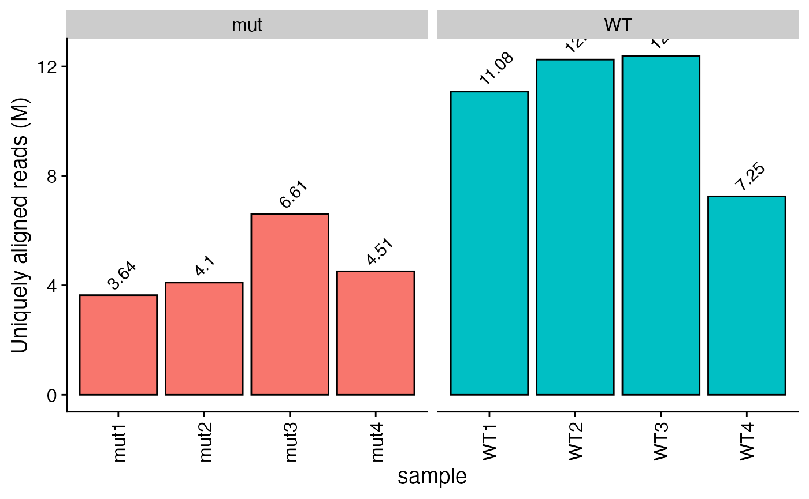
plot_aln_metrics(x = bbc_obj, type = "uniq_map_rate", facet_by="genotype", fill="genotype") + ggplot2::theme(legend.position = "none")
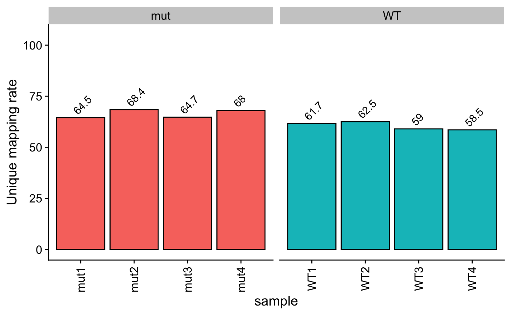
ens2sym can be used to import gene symbols from an Org.Db object. Output is stored as row data and can be accessed using rowData().
bbc_obj <- ens2sym(bbc_obj, org.Mm.eg.db)
## Using OrgDb.## 50600 total genes in BbcSE object.## 'select()' returned 1:many mapping between keys and columns## 524 genes removed due to more than 1 matching symbol.## 26213 genes with symbols found.## 83 genes with uniquified symbols.## 24387 genes either missing from database or filtered due to criteria described in documentation.# BioMart is also supported. In mouse, Biomart seems to give more matches and # the more appropriate symbol. However, for most protein-coding genes, the # results should be the same between orgdb and biomart. Biomart is slower and # can take 30 seconds-1min to finish. Another disadvantage is that while orgdb # is a package, Biomart data needs to be downloaded each time and thus is less # reproducible. # bbc_obj <- ens2sym(bbc_obj, BMdataset = "mmusculus_gene_ensembl") rowData(bbc_obj)
## DataFrame with 50600 rows and 1 column
## uniq_syms
## <character>
## ENSMUSG00000000001 Gnai3
## ENSMUSG00000000003 Pbsn
## ENSMUSG00000000028 Cdc45
## ENSMUSG00000000031 H19
## ENSMUSG00000000037 Scml2
## ... ...
## ENSMUSG00000112928 ENSMUSG00000112928
## ENSMUSG00000112929 ENSMUSG00000112929
## ENSMUSG00000112930 ENSMUSG00000112930
## ENSMUSG00000112931 Gm4303
## ENSMUSG00000112932 ENSMUSG00000112932Similarly, ens2entrez can be used to import Entrez IDs from an Org.Db object. Output is again stored as row data and can be accessed using rowData(). ens2sym was written with visualization in mind, so 1:1 matches are required. In contrast, ens2entrez was written to facilitate downstream gene set enrichment analyses, so we require only that each Entrez ID maps to only one Ensembl ID, but will take the first match if there are multiple possible Entrez IDs for a particular Ensembl ID. See the documentation for each function for more details.
bbc_obj <- ens2entrez(bbc_obj, org.Mm.eg.db)
## Using OrgDb.## 'select()' returned 1:many mapping between keys and columns## 23863 Ensembl IDs not in the database.## 442 Ensembl IDs matching the same Entrez ID as another Ensembl ID.## 26295 genes with valid Entrez ID out of 50600 total genes# BioMart is also supported. This is handy for certain species that for some # reason don't have Ensembl IDs in their orgdb (pig as of Nov 2019 for example) # bbc_obj <- ens2sym(bbc_obj, BMdataset = "mmusculus_gene_ensembl") rowData(bbc_obj)
## DataFrame with 50600 rows and 2 columns
## uniq_syms entrez_ids
## <character> <character>
## ENSMUSG00000000001 Gnai3 14679
## ENSMUSG00000000003 Pbsn 54192
## ENSMUSG00000000028 Cdc45 12544
## ENSMUSG00000000031 H19 14955
## ENSMUSG00000000037 Scml2 107815
## ... ... ...
## ENSMUSG00000112928 ENSMUSG00000112928 NA
## ENSMUSG00000112929 ENSMUSG00000112929 NA
## ENSMUSG00000112930 ENSMUSG00000112930 NA
## ENSMUSG00000112931 Gm4303 100043231
## ENSMUSG00000112932 ENSMUSG00000112932 NAUse the makeDGEList function to make a DGEList that is stored in a BbcEdgeR object in the edger slot of the BbcSE object. By default, lowly expressed genes are removed, normalization factors are calculated and normalized counts are calculated and stored in the norm_cts slot of the BbcEdgeR object as a SummarizedExperiment. In the same SummarizedExperiment, mean normalized counts for each group specified in the DGEList object are also calculated and stored as row data.
# by default, low expression genes filtered out, normalization factors # calculated, normalized counts calculated bbc_obj <- makeDGEList(bbc_obj, group="genotype") # what's in the edger slot now? str(edger(bbc_obj))
## Formal class 'BbcEdgeR' [package "bbcRNA"] with 3 slots
## ..@ dgelist :Formal class 'DGEList' [package "edgeR"] with 1 slot
## .. .. ..@ .Data:List of 2
## .. .. .. ..$ : int [1:10827, 1:8] 1371 1202 322 2413 55 4437 988 170 27 157 ...
## .. .. .. .. ..- attr(*, "dimnames")=List of 2
## .. .. .. .. .. ..$ : chr [1:10827] "ENSMUSG00000000001" "ENSMUSG00000000028" "ENSMUSG00000000056" "ENSMUSG00000000078" ...
## .. .. .. .. .. ..$ : chr [1:8] "WT1" "WT2" "WT3" "WT4" ...
## .. .. .. ..$ :'data.frame': 8 obs. of 3 variables:
## .. .. .. .. ..$ group : Factor w/ 2 levels "mut","WT": 2 2 2 2 1 1 1 1
## .. .. .. .. ..$ lib.size : num [1:8] 10038242 11159641 11399281 6662930 3294028 ...
## .. .. .. .. ..$ norm.factors: num [1:8] 1.04 1.03 1.08 1.08 1.01 ...
## ..@ de_results: list()
## ..@ norm_cts :Formal class 'SummarizedExperiment' [package "SummarizedExperiment"] with 5 slots
## .. .. ..@ colData :Formal class 'DFrame' [package "S4Vectors"] with 6 slots
## .. .. .. .. ..@ rownames : chr [1:8] "WT1" "WT2" "WT3" "WT4" ...
## .. .. .. .. ..@ nrows : int 8
## .. .. .. .. ..@ listData :List of 4
## .. .. .. .. .. ..$ genotype : chr [1:8] "WT" "WT" "WT" "WT" ...
## .. .. .. .. .. ..$ rep : num [1:8] 1 2 3 4 1 2 3 4
## .. .. .. .. .. ..$ new_sample : chr [1:8] "WT1" "WT2" "WT3" "WT4" ...
## .. .. .. .. .. ..$ orig_sample: chr [1:8] "SRR7240735_1" "SRR7240736_1" "SRR7240737_1" "SRR7240738_1" ...
## .. .. .. .. ..@ elementType : chr "ANY"
## .. .. .. .. ..@ elementMetadata: NULL
## .. .. .. .. ..@ metadata : list()
## .. .. ..@ assays :Formal class 'SimpleAssays' [package "SummarizedExperiment"] with 1 slot
## .. .. .. .. ..@ data:Formal class 'SimpleList' [package "S4Vectors"] with 4 slots
## .. .. .. .. .. .. ..@ listData :List of 1
## .. .. .. .. .. .. .. ..$ norm_log_cpm: num [1:10827, 1:8] 7.04 6.85 4.96 7.85 2.47 ...
## .. .. .. .. .. .. .. .. ..- attr(*, "dimnames")=List of 2
## .. .. .. .. .. .. .. .. .. ..$ : chr [1:10827] "ENSMUSG00000000001" "ENSMUSG00000000028" "ENSMUSG00000000056" "ENSMUSG00000000078" ...
## .. .. .. .. .. .. .. .. .. ..$ : chr [1:8] "WT1" "WT2" "WT3" "WT4" ...
## .. .. .. .. .. .. ..@ elementType : chr "ANY"
## .. .. .. .. .. .. ..@ elementMetadata: NULL
## .. .. .. .. .. .. ..@ metadata : list()
## .. .. ..@ NAMES : chr [1:10827] "ENSMUSG00000000001" "ENSMUSG00000000028" "ENSMUSG00000000056" "ENSMUSG00000000078" ...
## .. .. ..@ elementMetadata:Formal class 'DFrame' [package "S4Vectors"] with 6 slots
## .. .. .. .. ..@ rownames : NULL
## .. .. .. .. ..@ nrows : int 10827
## .. .. .. .. ..@ listData :List of 4
## .. .. .. .. .. ..$ uniq_syms : Named chr [1:10827] "Gnai3" "Cdc45" "Narf" "Klf6" ...
## .. .. .. .. .. .. ..- attr(*, "names")= chr [1:10827] "ENSMUSG00000000001" "ENSMUSG00000000028" "ENSMUSG00000000056" "ENSMUSG00000000078" ...
## .. .. .. .. .. ..$ entrez_ids : Named chr [1:10827] "14679" "12544" "67608" "23849" ...
## .. .. .. .. .. .. ..- attr(*, "names")= chr [1:10827] "ENSMUSG00000000001" "ENSMUSG00000000028" "ENSMUSG00000000056" "ENSMUSG00000000078" ...
## .. .. .. .. .. ..$ mut.norm_log_cpm: num [1:10827] 7.25 6.75 4.57 8.83 2.24 ...
## .. .. .. .. .. ..$ WT.norm_log_cpm : num [1:10827] 7.14 7.08 4.73 7.98 2.42 ...
## .. .. .. .. ..@ elementType : chr "ANY"
## .. .. .. .. ..@ elementMetadata: NULL
## .. .. .. .. ..@ metadata : list()
## .. .. ..@ metadata : list()# Number of rows in the SE nrow(bbc_obj)
## [1] 50600## [1] 10827plot_PCA runs a PCA and also tests for significant clusters using vegan::adonis(). Output is a list containing: 1. ggplot object for the PCA plot 2. ggplot object for the scree plot 3. a list of results from adonis().
set.seed(100) # adonis uses permutations. Set seed to make reproducible. pca_plots <- plot_PCA(bbc_obj, color_by="genotype", shape_by="genotype", adonis_by=c("genotype","rep")) pca_plots[[1]]
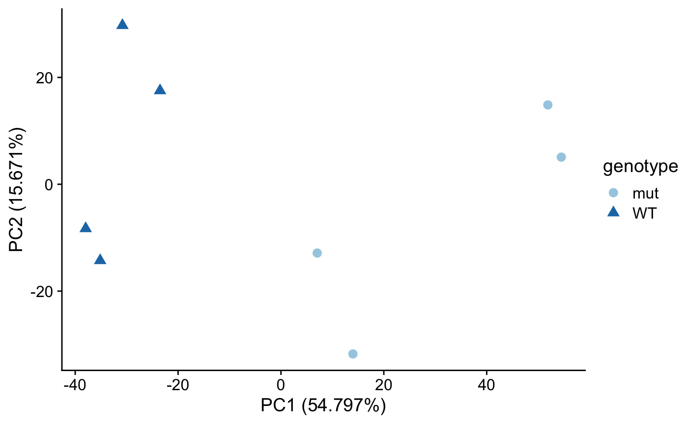
pca_plots[[2]]
Use findDEGs to fit a model and test for DE genes for various contrasts. For the edgeR workflow, either glmQLFTest or glmTreat can be selected using the test argument.
bbc_obj <- findDEGs(bbc_obj, de_pkg = "edger", test = "glmQLFTest", design = "~0+genotype", contrasts = list(c("genotype", "mut", "WT"), c("genotype", "WT", "mut"))) # plot the P-value distribution plot_pval_distrib(bbc_obj)
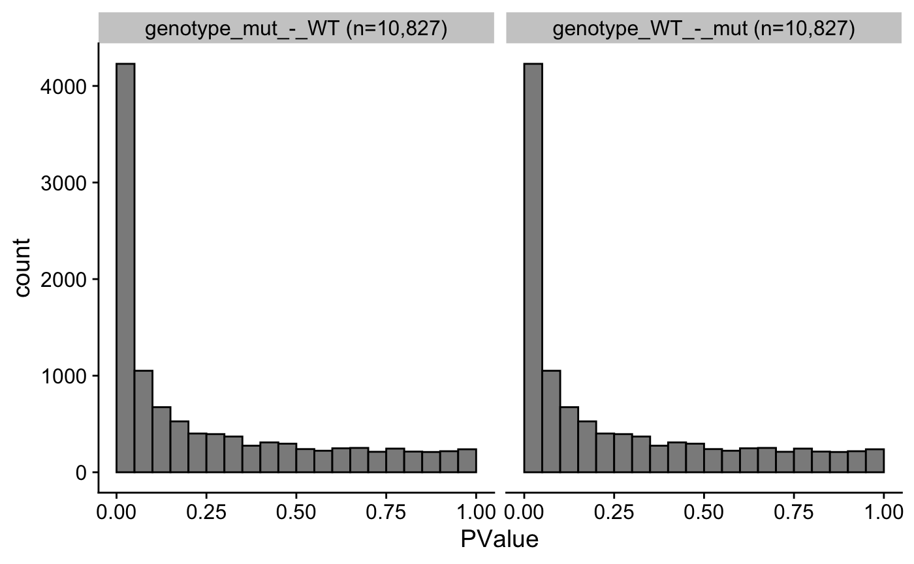
# uses EnhancedVolcano package plot_volcano(bbc_obj)
## $`genotype_mut_-_WT`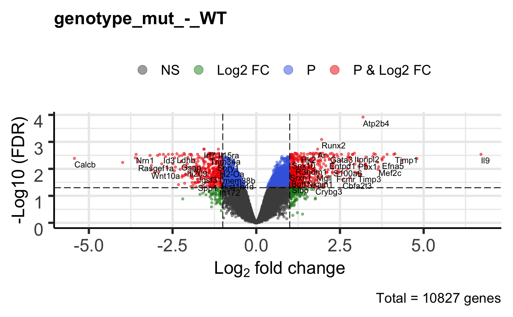
##
## $`genotype_WT_-_mut`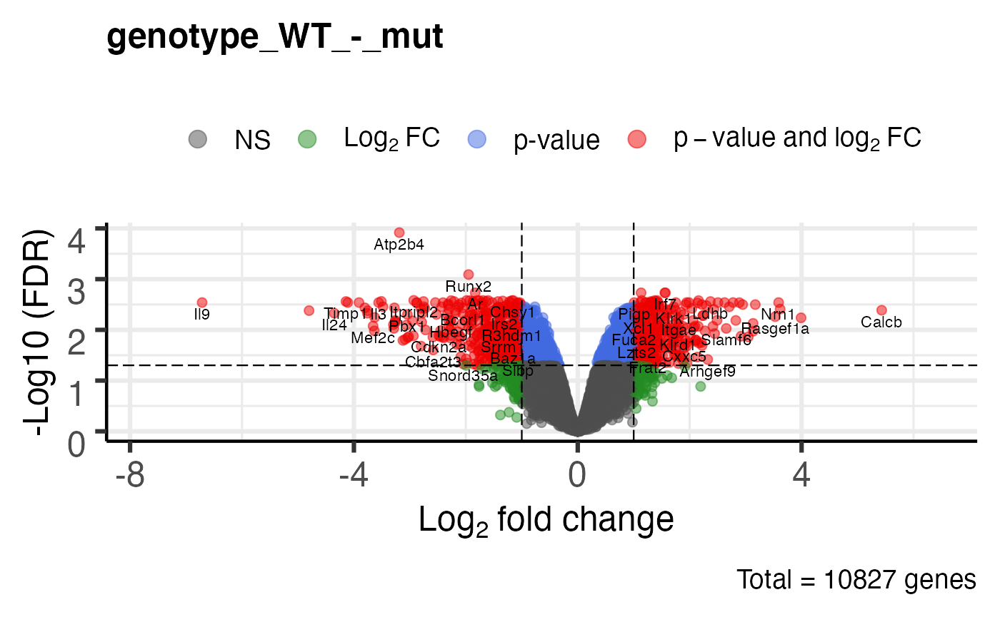
de_res <- get_de_table(bbc_obj) str(de_res)
## List of 2
## $ genotype_mut_-_WT:'data.frame': 10827 obs. of 9 variables:
## ..$ gene_symbol : chr [1:10827] "Atp2b4" "Runx2" "Irf7" "Il15ra" ...
## ..$ ensembl_id : chr [1:10827] "ENSMUSG00000026463" "ENSMUSG00000039153" "ENSMUSG00000025498" "ENSMUSG00000023206" ...
## ..$ logFC : num [1:10827] 3.19 1.95 -1.57 -1.13 -1.56 ...
## ..$ logCPM : num [1:10827] 4.7 5.13 4.45 5 6.96 ...
## ..$ F : num [1:10827] 240.6 144.3 105.7 99.7 98 ...
## ..$ PValue : num [1:10827] 1.12e-08 1.50e-07 7.01e-07 9.35e-07 1.02e-06 ...
## ..$ FDR : num [1:10827] 0.000121 0.000812 0.001858 0.001858 0.001858 ...
## ..$ mut.norm_log_cpm: num [1:10827] 5.62 5.83 3.43 4.31 5.97 ...
## ..$ WT.norm_log_cpm : num [1:10827] 2.49 3.9 4.98 5.43 7.53 ...
## $ genotype_WT_-_mut:'data.frame': 10827 obs. of 9 variables:
## ..$ gene_symbol : chr [1:10827] "Atp2b4" "Runx2" "Irf7" "Il15ra" ...
## ..$ ensembl_id : chr [1:10827] "ENSMUSG00000026463" "ENSMUSG00000039153" "ENSMUSG00000025498" "ENSMUSG00000023206" ...
## ..$ logFC : num [1:10827] -3.19 -1.95 1.57 1.13 1.56 ...
## ..$ logCPM : num [1:10827] 4.7 5.13 4.45 5 6.96 ...
## ..$ F : num [1:10827] 240.6 144.3 105.7 99.7 98 ...
## ..$ PValue : num [1:10827] 1.12e-08 1.50e-07 7.01e-07 9.35e-07 1.02e-06 ...
## ..$ FDR : num [1:10827] 0.000121 0.000812 0.001858 0.001858 0.001858 ...
## ..$ mut.norm_log_cpm: num [1:10827] 5.62 5.83 3.43 4.31 5.97 ...
## ..$ WT.norm_log_cpm : num [1:10827] 2.49 3.9 4.98 5.43 7.53 ...Here we demonstrate the plot_heatmap function. Column names from rowData(BbcSE_object) and colData(BbcSE_object) can be passed to annotate or split the heatmap. In this example, we demonstrate how to create a new row data column to represent up-regulated versus down-regulated genes and pass it to plot_heatmap.
# get the most DE genes (by adjust pval) top_genes <- rownames(edgeR::topTags( de_results(edger(bbc_obj))[[2]], n=20) ) # get the sign of the LFC and store in rowData ## get the de_results slot of the BbcEdgeR object bbc_de_res <- de_results(edger(bbc_obj)) ## get contrast results de_table <- bbc_de_res$`genotype_mut_-_WT`$table ## get the LFC sign mut_vs_WT_sign <- ifelse(de_table$logFC > 0, "up", "down") names(mut_vs_WT_sign) <- rownames(de_table) ## store LFC sign in rowData. Genes with no matches will be NA. rowData(bbc_obj)$mut_vs_WT_sign <- mut_vs_WT_sign[match(rownames(bbc_obj), names(mut_vs_WT_sign))] ## make rep a factor colData(bbc_obj)$rep <- factor(colData(bbc_obj)$rep, levels=c("1", "2", "3", "4")) # plot Zscores of normalized log2 cpms plot_heatmap(x = bbc_obj, genes = top_genes, zscores=TRUE, rowdata_annot = "mut_vs_WT_sign", coldata_annot = c("rep", "new_sample", "genotype"), rowdata_split = "mut_vs_WT_sign", coldata_split="genotype", gene_labels = "uniq_syms")
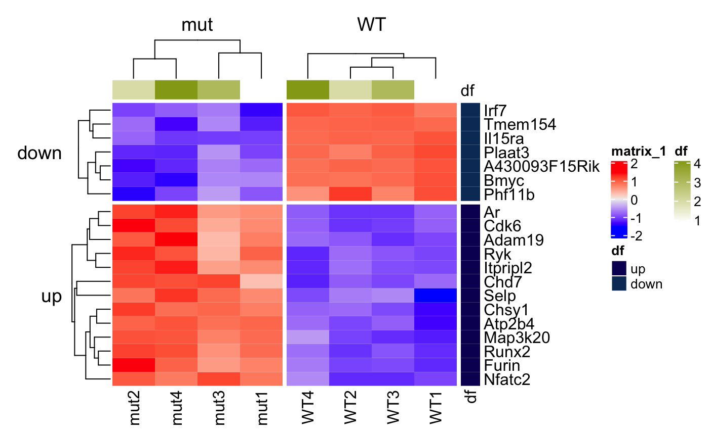
# plot average normalized log2 cpms plot_heatmap(x = bbc_obj, genes = top_genes, zscores=FALSE, rowdata_split = "mut_vs_WT_sign", gene_labels = "uniq_syms", grouped=TRUE)
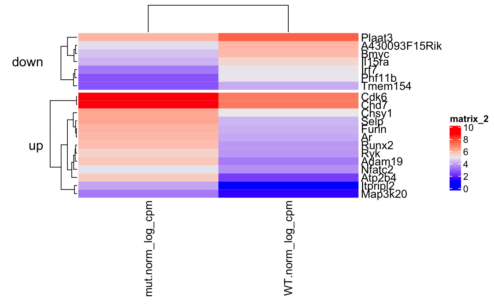
run_gsea is a wrapper for clusterProfiler and can be used to run GSEA for various gene sets. The output are gseaResult objects that can be visualized using enrichplot methods or processed further with other clusterProfiler methods.
# set seed to make GSEA deterministic set.seed(42) H_gsea_results_list <- run_gsea(x = bbc_obj, de_pkg = "edger", gene_set = "H", orgDb = org.Mm.eg.db, organism = "Mus musculus")
## genotype_mut_-_WT: removed 0 genes out of 10827 due to logFC = 0 or PValue = 1## genotype_mut_-_WT: removed 505 genes out of 10827 due to no Entrez gene match## genotype_mut_-_WT: total genes remaining is 10322## preparing geneSet collections...## GSEA analysis...## Warning in fgseaMultilevel(...): For some pathways, in reality P-values are less
## than 1e-10. You can set the `eps` argument to zero for better estimation.## leading edge analysis...## done...## genotype_WT_-_mut: removed 0 genes out of 10827 due to logFC = 0 or PValue = 1## genotype_WT_-_mut: removed 505 genes out of 10827 due to no Entrez gene match## genotype_WT_-_mut: total genes remaining is 10322## preparing geneSet collections...## GSEA analysis...## Warning in fgseaMultilevel(...): For some pathways, in reality P-values are less
## than 1e-10. You can set the `eps` argument to zero for better estimation.## leading edge analysis...## done...names(H_gsea_results_list)
## [1] "genotype_mut_-_WT" "genotype_WT_-_mut"# to get the missing genes missing_genes <- find_missing_in_gseaResult(H_gsea_results_list, bbc_obj)
enrichplot::dotplot(H_gsea_results_list[[1]], showCategory=10, title="Top gene sets", split=".sign") + facet_grid(.~.sign)
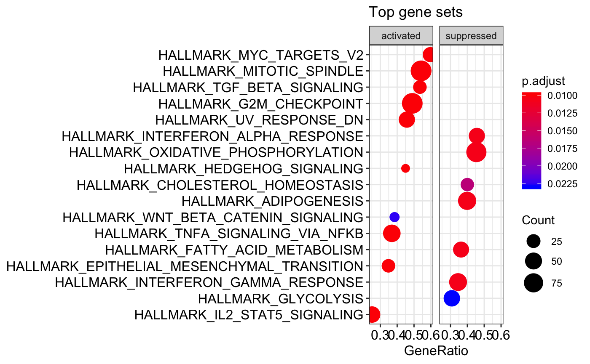
kegg_gsea_results_list <- run_gsea(x = bbc_obj, de_pkg = "edger", gene_set = "kegg", orgDb = org.Mm.eg.db, organism = "mmu", minGSSize = 30, use_internal_data = FALSE)
## genotype_mut_-_WT: removed 0 genes out of 10827 due to logFC = 0 or PValue = 1## genotype_mut_-_WT: removed 505 genes out of 10827 due to no Entrez gene match## genotype_mut_-_WT: total genes remaining is 10322## Reading KEGG annotation online:
##
## Reading KEGG annotation online:## preparing geneSet collections...## GSEA analysis...## Warning in fgseaMultilevel(...): For some pathways, in reality P-values are less
## than 1e-10. You can set the `eps` argument to zero for better estimation.## leading edge analysis...## done...## genotype_WT_-_mut: removed 0 genes out of 10827 due to logFC = 0 or PValue = 1## genotype_WT_-_mut: removed 505 genes out of 10827 due to no Entrez gene match## genotype_WT_-_mut: total genes remaining is 10322## preparing geneSet collections...## GSEA analysis...## Warning in fgseaMultilevel(...): For some pathways, in reality P-values are less
## than 1e-10. You can set the `eps` argument to zero for better estimation.## leading edge analysis...## done...names(kegg_gsea_results_list)
## [1] "genotype_mut_-_WT" "genotype_WT_-_mut"enrichplot::dotplot(kegg_gsea_results_list[[1]], showCategory=10, title="Top gene sets", split=".sign") + facet_grid(.~.sign)
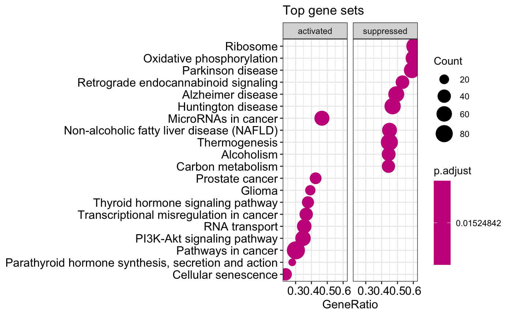
# shorten the descriptions to 30 characters or less enrichplot::dotplot(shorten_desc(kegg_gsea_results_list[[1]], 30), showCategory=10, title="Top gene sets", split=".sign") + facet_grid(.~.sign)
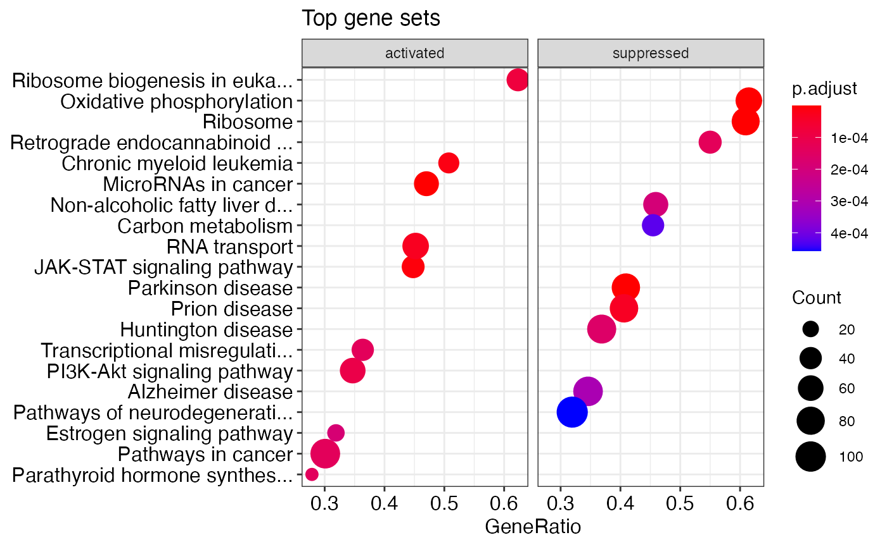
#gseaplot(kegg_gsea_results_list[[1]], geneSetID = "mmu05200", by="runningScore")kegg_hyper_results_list <- run_hypergeometric(x = bbc_obj, de_pkg = "edger", gene_set = "kegg", orgDb = org.Mm.eg.db, organism = "mmu")
## genotype_mut_-_WT: removed 505 genes out of 10827 due to no Entrez gene match## genotype_mut_-_WT: total genes remaining is 10322## genotype_WT_-_mut: removed 505 genes out of 10827 due to no Entrez gene match## genotype_WT_-_mut: total genes remaining is 10322names(kegg_hyper_results_list)
## [1] "genotype_mut_-_WT_UP" "genotype_mut_-_WT_DWN" "genotype_WT_-_mut_UP"
## [4] "genotype_WT_-_mut_DWN"res_idx <- 1 enrichplot::dotplot(kegg_hyper_results_list[[res_idx]], showCategory=10, title=paste0("Top gene sets -- ", names(kegg_hyper_results_list)[res_idx]))
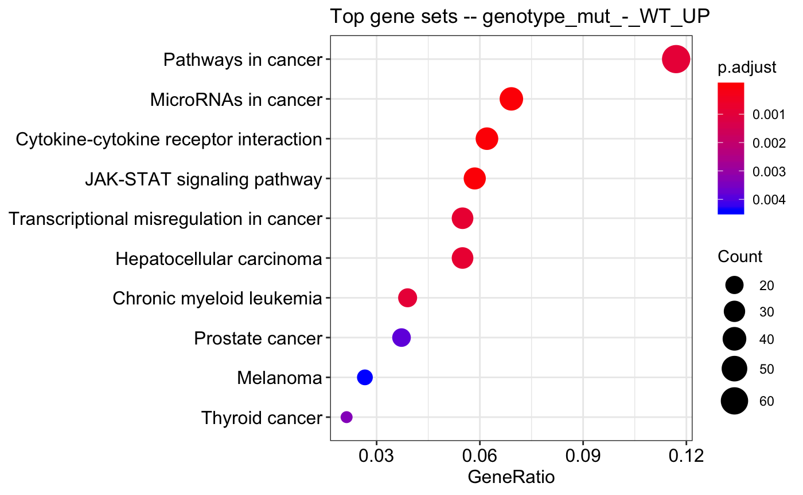
#gseaplot(kegg_gsea_results_list[[1]], geneSetID = "mmu05200", by="runningScore")## R version 4.0.2 (2020-06-22)
## Platform: x86_64-apple-darwin17.0 (64-bit)
## Running under: macOS Catalina 10.15.7
##
## Matrix products: default
## BLAS: /Library/Frameworks/R.framework/Versions/4.0/Resources/lib/libRblas.dylib
## LAPACK: /Library/Frameworks/R.framework/Versions/4.0/Resources/lib/libRlapack.dylib
##
## locale:
## [1] en_US.UTF-8/en_US.UTF-8/en_US.UTF-8/C/en_US.UTF-8/en_US.UTF-8
##
## attached base packages:
## [1] parallel stats4 stats graphics grDevices utils datasets
## [8] methods base
##
## other attached packages:
## [1] ggplot2_3.3.2 enrichplot_1.8.1
## [3] org.Mm.eg.db_3.11.4 AnnotationDbi_1.50.3
## [5] SummarizedExperiment_1.18.2 DelayedArray_0.14.1
## [7] matrixStats_0.57.0 Biobase_2.48.0
## [9] GenomicRanges_1.40.0 GenomeInfoDb_1.24.2
## [11] IRanges_2.22.2 S4Vectors_0.26.1
## [13] BiocGenerics_0.34.0 bbcRNA_0.1.2
##
## loaded via a namespace (and not attached):
## [1] tidyselect_1.1.0 RSQLite_2.2.1 grid_4.0.2
## [4] BiocParallel_1.22.0 devtools_2.3.0 scatterpie_0.1.5
## [7] munsell_0.5.0 ragg_0.4.0 statmod_1.4.35
## [10] withr_2.3.0 colorspace_1.4-1 GOSemSim_2.14.2
## [13] knitr_1.30 rstudioapi_0.11 DOSE_3.14.0
## [16] labeling_0.4.2 urltools_1.7.3 GenomeInfoDbData_1.2.3
## [19] polyclip_1.10-0 bit64_4.0.5 farver_2.0.3
## [22] rprojroot_1.3-2 downloader_0.4 vctrs_0.3.4
## [25] generics_0.1.0 xfun_0.19 BiocFileCache_1.12.1
## [28] R6_2.5.0 clue_0.3-57 graphlayouts_0.7.1
## [31] locfit_1.5-9.4 msigdbr_7.2.1 bitops_1.0-6
## [34] fgsea_1.14.0 gridGraphics_0.5-0 assertthat_0.2.1
## [37] scales_1.1.1 ggraph_2.0.3 gtable_0.3.0
## [40] processx_3.4.4 tidygraph_1.2.0 rlang_0.4.8
## [43] genefilter_1.70.0 systemfonts_0.3.2 GlobalOptions_0.1.2
## [46] splines_4.0.2 europepmc_0.4 checkmate_2.0.0
## [49] BiocManager_1.30.10 yaml_2.2.1 reshape2_1.4.4
## [52] backports_1.2.0 qvalue_2.20.0 clusterProfiler_3.16.1
## [55] tools_4.0.2 usethis_1.6.1 ggplotify_0.0.5
## [58] ellipsis_0.3.1 RColorBrewer_1.1-2 sessioninfo_1.1.1
## [61] ggridges_0.5.2 Rcpp_1.0.5 plyr_1.8.6
## [64] progress_1.2.2 zlibbioc_1.34.0 purrr_0.3.4
## [67] RCurl_1.98-1.2 ps_1.4.0 prettyunits_1.1.1
## [70] openssl_1.4.3 GetoptLong_1.0.4 viridis_0.5.1
## [73] cowplot_1.1.0 ggrepel_0.8.2 cluster_2.1.0
## [76] fs_1.4.1 magrittr_1.5 data.table_1.13.2
## [79] DO.db_2.9 circlize_0.4.11 triebeard_0.3.0
## [82] reactome.db_1.70.0 pkgload_1.1.0 xtable_1.8-4
## [85] hms_0.5.3 evaluate_0.14 XML_3.99-0.5
## [88] gridExtra_2.3 shape_1.4.5 testthat_3.0.0
## [91] compiler_4.0.2 biomaRt_2.44.4 tibble_3.0.4
## [94] crayon_1.3.4 htmltools_0.5.0 mgcv_1.8-31
## [97] geneplotter_1.66.0 tidyr_1.1.2 ReactomePA_1.32.0
## [100] DBI_1.1.0 tweenr_1.0.1 dbplyr_1.4.4
## [103] ComplexHeatmap_2.4.3 MASS_7.3-51.6 rappdirs_0.3.1
## [106] Matrix_1.2-18 readr_1.4.0 permute_0.9-5
## [109] cli_2.1.0 igraph_1.2.6 pkgconfig_2.0.3
## [112] pkgdown_1.6.1 rvcheck_0.1.8 xml2_1.3.2
## [115] annotate_1.66.0 EnhancedVolcano_1.6.0 XVector_0.28.0
## [118] stringr_1.4.0 callr_3.5.1 digest_0.6.27
## [121] vegan_2.5-6 graph_1.66.0 rmarkdown_2.5
## [124] fastmatch_1.1-0 edgeR_3.30.3 curl_4.3
## [127] graphite_1.34.0 rjson_0.2.20 lifecycle_0.2.0
## [130] nlme_3.1-148 jsonlite_1.7.1 desc_1.2.0
## [133] viridisLite_0.3.0 askpass_1.1 limma_3.44.3
## [136] fansi_0.4.1 pillar_1.4.6 lattice_0.20-41
## [139] survival_3.1-12 httr_1.4.2 pkgbuild_1.1.0
## [142] GO.db_3.11.4 glue_1.4.2 remotes_2.1.1
## [145] png_0.1-7 bit_4.0.4 ggforce_0.3.2
## [148] stringi_1.5.3 blob_1.2.1 textshaping_0.1.2
## [151] DESeq2_1.28.1 memoise_1.1.0 dplyr_1.0.2